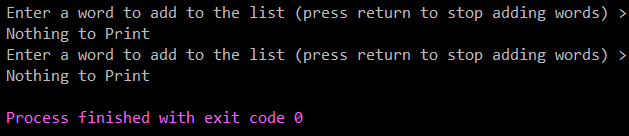
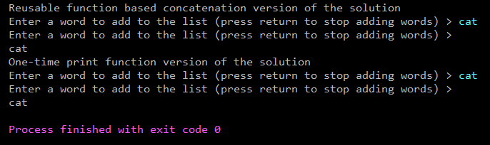
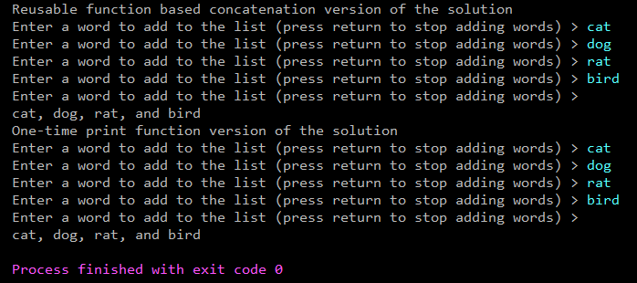

comma module¶
- Student
Craig Smith
- Week-5
Programming with Lists
- Module
Comma Code
- Course
CMIT-135-40D (Champlain College)
- Professor
Steve Giles
- Author
Craig Smith
Purpose¶
The program takes a user entered list from the terminal and prints the list as a comma-delimited listing with proper spacing. The code includes two versions of the solution. A function call based concatenation version and a one-time print function version in main. Each version demonstrates different aspects of this weeks lessons.
Constraints¶
Include commas and spaces inbetween listed items
Last item must be displayed with the word “and” in front of it. (and last_item)
Course provided code utilized in the list_generator function
Parameters¶
- param some_list
Input list generated from user terminal input
- output
Printed list formatted as follows: item1, item2, item3, and last_item
-
comma.comma_code(some_list)¶ This function creates a comma-delimited string from an input list :param some_list: Input list generated from user terminal input :return: string formatted as follows: item1, item2, item3, and last_item
-
comma.list_generator()¶ This function creates a list from a user input list of values :return: List of user input string values
Code¶
1 """ 2 3 :Student: Craig Smith 4 :Week-5: Programming with Lists 5 :Module: Comma Code 6 :Course: CMIT-135-40D (Champlain College) 7 :Professor: Steve Giles 8 :Author: Craig Smith 9 10 Purpose 11 ------- 12 The program takes a user entered list from the terminal and prints the list 13 as a comma-delimited listing with proper spacing. 14 The code includes two versions of the solution. 15 A function call based concatenation version and a one-time print function version in main. 16 Each version demonstrates different aspects of this weeks lessons. 17 18 Constraints 19 ----------- 20 1. Include commas and spaces inbetween listed items 21 2. Last item must be displayed with the word "and" in front of it. (and last_item) 22 3. Course provided code utilized in the list_generator function 23 24 Parameters 25 ---------- 26 :param some_list: Input list generated from user terminal input 27 :output: Printed list formatted as follows: item1, item2, item3, and last_item 28 29 """ 30 31 32 def comma_code(some_list): 33 """ 34 This function creates a comma-delimited string from an input list 35 :param some_list: Input list generated from user terminal input 36 :return: string formatted as follows: item1, item2, item3, and last_item 37 """ 38 new_string = '' 39 if not some_list: 40 return "Nothing to Print" 41 elif len(some_list) == 1: 42 return some_list[0] 43 else: 44 for dummy_val in some_list[:-1]: 45 new_string += (dummy_val + ', ') 46 new_string += ('and ' + some_list[-1]) 47 return new_string 48 49 50 def list_generator(): 51 """ 52 This function creates a list from a user input list of values 53 :return: List of user input string values 54 """ 55 list_to_print = [] 56 while True: 57 new_word = input("Enter a word to add to the list (press return to stop adding words) > ") 58 if new_word == "": 59 break 60 else: 61 list_to_print.append(new_word) 62 return list_to_print 63 64 65 if __name__ == '__main__': 66 67 # Reusable function based version 68 print(comma_code(list_generator())) 69 70 # One-time solution 71 listing = list_generator() 72 if not listing: 73 print('Nothing to Print') 74 elif len(listing) == 1: 75 print(listing[0]) 76 else: 77 print(*listing[:-1], sep=", ", end=',') 78 print(' and ' + listing[-1]) 79
Code Output Example¶


